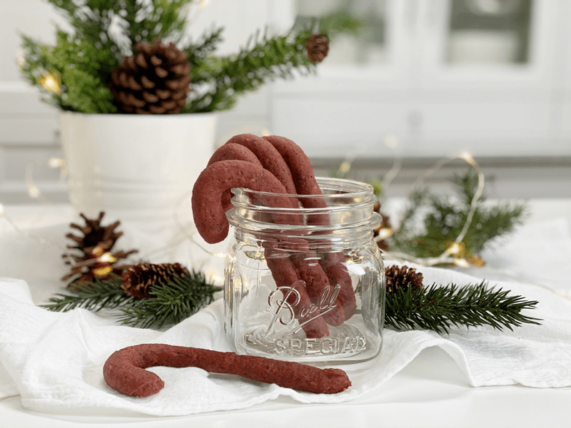
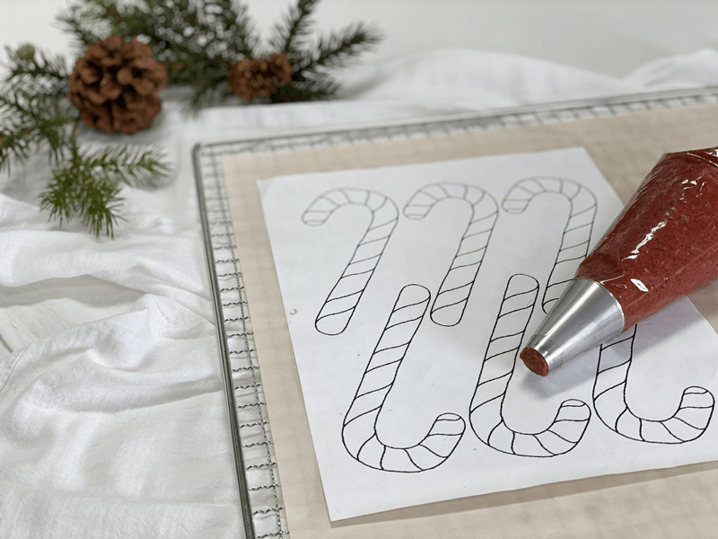
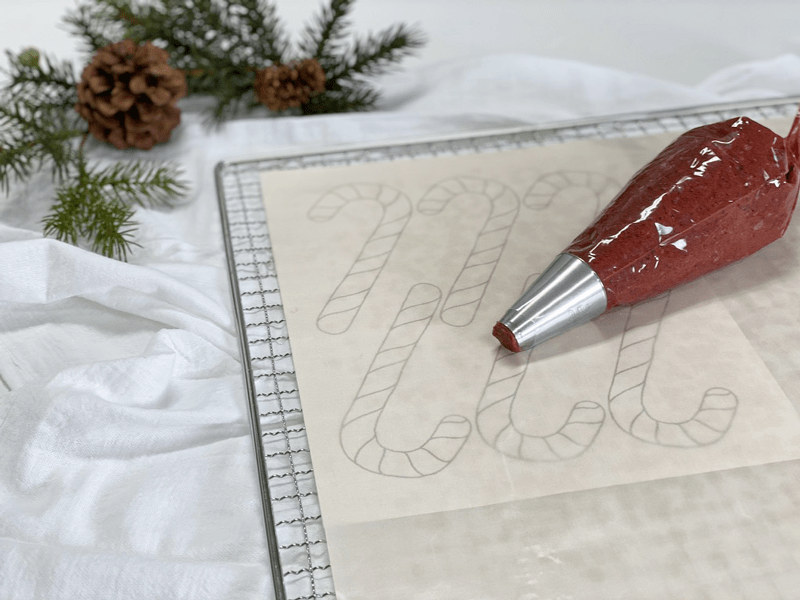
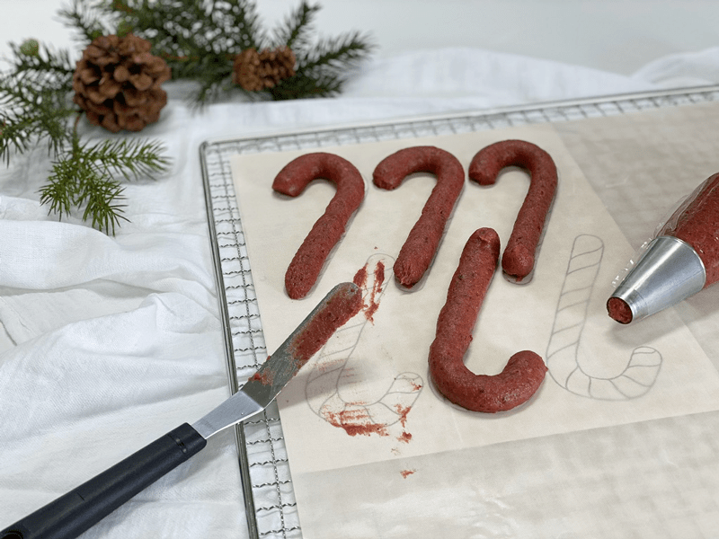
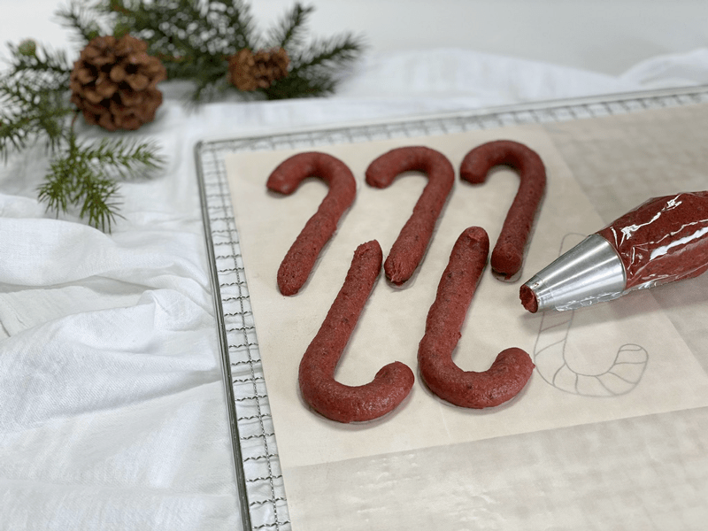

Peppermint Candy Canes
– raw, vegan, gluten-free, nut-free –
These are not your typical candy canes that are made from 3 cups sugar, 1 cup of corn syrup, red #5 food dye, and a few other items. My candy canes are not solid and crunchy, nor are they swirled with ribbons of red and white. Maybe one day… but this experiment is just taking it one step at a time.

These candy canes hold their shape but will slowly bend over if you hold it by the very end. They are chewy. Be careful that you don’t add too much peppermint. Since you will be biting off pieces and chewing (rather than sucking on it), the peppermint grows in strength. To create the candy cane shapes, you can do this freehand, or you can use a template that is slid under the teflex sheet.
So they may not be the candy canes that you grew up eating, but it is time to start some new traditions. Candy canes can taste good and be good for you! Dates are the base of this recipe, and they are an excellent source of dietary fiber, especially soluble fiber, the type that promotes and helps maintain healthy blood glucose and cholesterol levels. They are higher in potassium than oranges, bananas, and spinach.
The next ingredient that packs some greatness to this recipe is the beet juice. When is the last time you got your kiddos to partake of beet juice? Shhh, it will be our secret. :) Beetroot juice is one of the richest dietary sources of antioxidants and is known to protect the liver. The list of health benefits goes on and on for both of the ingredients that I just mentioned; I just shared enough to wet your whistle. I hope you enjoy these. Merry Christmas!
Ingredients:
Preparation:
- In the food processor, fitted with the “S” blade or a high powered blender combine the date paste, beet juice, peppermint extract, and salt until everything is well interrogated and smooth.
- If your date paste is on the thinner side of texture, use 2 cups of packed, moist, whole Medjool dates that have been pitted.
- Start with 1/2 tsp of peppermint extract and see how you like it, add more if the flavor is faint to you.
- As an alternative to beet juice, I have found that my red blackberry sauce recipe works perfectly as well.
- Place the batter in a piping bag fitted with a plain circular tip. Mine was about 1 1/4″ thick.
- Pipe the batter onto the teflex sheet, using the template as your guide.
- Dehydrate at 145 degrees (F) for 1 hour, then reduce to 115 degrees (F) for about 6 hours or until it is dry enough to remove and place directly on the mesh sheet.
- Continue drying for another 18 hours or until dry. The cane canes won’t dry hard, but they shouldn’t be sticky.
- Store in an airtight container on the counter for several weeks. You can even hang them on the Christmas tree for a week.
Culinary Explanations:
- Why do I start the dehydrator at 145 degrees (F)? Click (here) to learn the reason behind this.
- When working with fresh ingredients, it is essential to taste test as you build a recipe. Learn why (here).
- Don’t own a dehydrator? Learn how to use your oven (here). I do, however, honestly believe that it is a worthwhile investment. Click (here) to learn what I use.
-

-
Using a template can be helpful.
-

-
Slide the template under the non-stick sheet that comes with the dehydrator.
-

-
If you mess up, that’s ok! Scoop up the batter and do it again.
-

-
Ready for the dehydrator.
© AmieSue.com